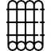

Browsing published data¶
All published data is accessible to everybody with no need for user authentication.
Search¶
Popular searches¶
Popular searches include some predefined filters, which enable the user a quick access to Early Watercraft data.
- Popular searches include:
- Slovenian Logboats (original logboats, found in Slovenia)
- Slovenian Paddles (original paddles (stand alone and with logboats), found in Slovenia)
- Slovenian Logboat Replicas (Slovenian Logboat Replicas)
- Pile Dwellings Logboats (logboats from pile dwellings)
- Underwater Logboats (logboats still underwater)
- Neolithic Logboats (logboats from nelolithic period)
When clicking on selected link, the results for the selected popular search are shown.
To view popular searches again, select Tools / View Popular Searches.
Custom search¶
Custom search field enables the user to enter any text field to search for. While typing the search term, the application shows all relevant data fields that match that term. If the user selects the suggested data field, the search only returns results with the selected data field, otherwise the search returns results with the entered search term in any data field.
- Useful tips:
- The user can enter multiple search terms at once - the data must meet all entered conditions.
- If the user clicks on a box with the search condition, the condition is negated (reversed).
- To remove a custom condition, click on ‘x’ to the right of the search condition.
- To remove all conditions, select ‘Tools’ / ‘Clear Search’.
Location filter¶
Location filter enables the user to limit the search results shown on the map.
- From the ‘Map Tools’ menu, the user is able to:
- Limit the search results to a selected map area
- Draw a Polygon to Filter Map
- Draw a Line to Filter Map
- Draw a Point to Filter Map
For all options above, the user can also modify the buffer width (in ft).
Search results¶
The search results are shown as a list comprising only several relevant data (name, type and description). To view all data (resource Report), click on the resource name.
With the location filter enabled, the resources found on the map are presented larger, while all other results are shown smaller and gray. When there is more than one page of results, only the results on the selected page are emphasized (enlarged) in the map.
Export results¶
The search results can be exported to .SHP, .CSV or .KML format. The exported results only consist of the basic data, shown in the result list.
Map view¶
The map view shows resources in Early Watercraft database on a map. Each resource has a default marker, showing the position on the map; Early Watercraft resource shows additional icons depending on the type of Watercraft. When the resources are crowded (or the map is zoomed out), the icon only shows the number of resources. When clicked, the map will automatically zoom to the resources in that region. When clicked on a single resource (ie. Early Watercraft), a popup window appears, showing basic info. To show all resource data, select the ‘View Report’ button.
Icon types¶
Icons on the map are shown based on Watercraft type:
| Icon | Type |
|---|---|
| Default marker | |
| Boat | |
| Coracle | |
|  | Raft |
| Canoe | |
| Kayak | |
| Board | |
| Paddle | |
| Sail | |
| Frame |
{kind=link}
{kind=link}
{kind=link}
{kind=link}
{kind=link}
{kind=link}
{kind=link}
{kind=link}
{kind=link}
{kind=link}
If Early Watercraft isn’t an original, icons have additional markings in the upper right corner:
| Marking | Type |
|---|---|
| REP | Replica |
| REC | Reconstruction |
| VRC | Virtual reconstruction |
| MOD | Model |
Note
These icons and markings are temporary and will be changed in the near future.
Colors¶
The icons used in Early Watercraft resources have a color based on the type of materials used:
| Material | Color |
|---|---|
| Log | Brown |
| Bamboo | Green |
| Bark | Gray |
| Reed | Orange |
| Skin | Pink |
Report¶
A resource report shows all data for the selected resource. The report page only shows the data that were entered, empty sections of the report are not shown.
Pictures, saved in related Information resources, are shown in the resource summary, all other related resources are shown as links in the ‘Related Resources’ section.
Supported 3D models (PLY, OBJ, STL) are listed in a separate group and can be viewed as digital representation of the related Information Resource.
Note
3D models are powered by 3DHOP (PLY) and JSC3D (OBJ, STL) engine. Some older 3D GPU might cause some performance issues and require some special preparation of 3D models.
The report is accessible via ‘Report’ button on the map or by clicking on the resource name (search results or edit page).